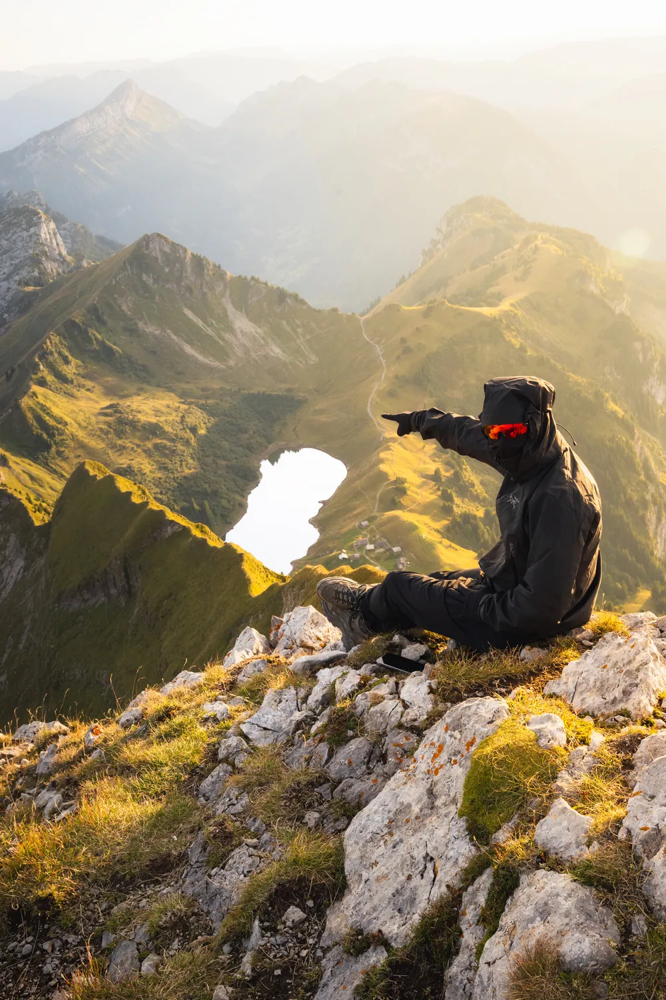

Photo · @leon.helgPEAKS
An off-radar Bornes summit above a tiny crescent lake. France, not Switzerland, but one ride away.
Start from the Col de la Colombière, take the left fork toward Pic de Jallouvre and follow the ridge over Col du Rasoir to the summit. Pointe Blanche is the optional add-on from the same ridge. Around five and a half hours round trip.
The crescent lake below the summit is the frame-maker. Sit on the rocks, put the lake in the corner, the Aravis chain filling the back.
Golden hour here is ridiculous. The whole range catches orange light while the valley fills with haze. Do not leave until the sun is gone.
Planning · Pic de Jallouvre
Stats reflect the quickest route
How to get there
Start from the Col de la Colombière, take the left fork toward Pic de Jallouvre and follow the ridge over Col du Rasoir to the summit. Pointe Blanche is the optional add-on from the same ridge. Around five and a half hours round trip.
Routes
Approach to Pic de Jallouvre
Route
Mountain hut
Cable car
Sources